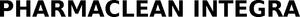

Trade Mark Journal No.2026/010 6 March 2026
WO0000001889788 (5,10,16,39)
Office of origin: European Union Intellectual Property Office (EUIPO)
Date of International Registration:20 October 2025
Date of designation in the UK:
20 October 2025

International priority date claimed: 22 May 2025
(European Union Intellectual Property Office (EUIPO))
(019191345)
- Class 5
- Adhesive bands and tapes for medical use; bandages; bandages for dressings; medical and surgical dressings; wound dressings; first aid dressings; gauze for dressings; material prepared for bandaging; vulnerary sponges; wadding for medical purposes; surgical tapes, pads and cloth; non-sterile and sterile applicators for medical and surgical purposes; pharmaceutical, veterinary and sanitary preparations; materials for dressings; disinfectants; adhesive plasters; adhesive tapes for medical purposes; tissues and cloths for surgical use; envelopes, rolls, tapes and strips for sterilisation; sterilising solutions; sterile solutions for medical purposes; sterilizing preparations; cleaners [preparations] for sterilising surgical instruments; cleaners [preparations] for sterilising dental instruments; sterilized dressing; biological indicators for monitoring sterilization processes for medical or veterinary purposes; washes (sterilizing -); sterile plastic films for use as bandaging; sanitary sterilising preparations; sterilising substances; substances in tablet form for use in the sterilisation of water; tapes for medical and surgical use; cover cloths for surgical purposes; plaster of paris bandages and dressings; nonwoven wrappers used to sterilise surgical and medical instruments and equipment; no one of these products is or refers to contact lenses fluid.
- Class 10
- Clothing for medical and surgical purposes; protective clothing for medical and surgical use; sterile clothing for medical and surgical use; disposable clothing for medical and surgical use; clothing for operating rooms; gowns for surgical use; kimono gowns for medical and surgical purposes; caps for medical and surgical use including round caps and clip caps; gloves for medical and surgical use; face masks for medical and surgical use; face masks for medical, dental, veterinary or surgical use; shoe and boot covers for medical and surgical use; supportive and suspensory bandages; compression bandages; bandages, elastic; orthopedic sling; splinting bandages; plaster for medical or surgical purposes; mixing apparatus for mixing plaster for medical or surgical purposes; surgical and medical sponges; medical drapes of non-woven textile materials; packaging for use in storing sterile medical and surgical equipment and instruments; anti-bacterial packaging for use in relation to medical and surgical equipment and instruments; surgical caps; tweezers for medical use; nurses' tweezers; medical scissors; sterile sheets, surgical; sterilised sheets for use on patients during surgery; sterile sponges; films of sterile plastic, nonwoven sheets and plastic material for use as a barrier against contamination of medical and surgical equipment and instruments; decontaminating carpets; isolation bags for medical use; medical bags designed to hold medical instruments.
- Class 16
- Paper envelopes for packaging; plastic envelopes; envelopes [stationery]; pens, brush pens; cases for pens and markers; adhesive tapes for household, medical or stationery use; sterile plastic film for use in the packaging of surgical and medical equipment and instruments.
- Class 39
- Wrapping and packaging of goods (objects, clothing); provision of storage services; storage information; wrapping of goods; repackaging in clean rooms and sterile rooms.
A.M. INSTRUMENTS S.R.L.
Representative: Federico Le Divelec Lemmi, Viale Bianca Maria, 25, I-20122 Milano (MI), ITALY